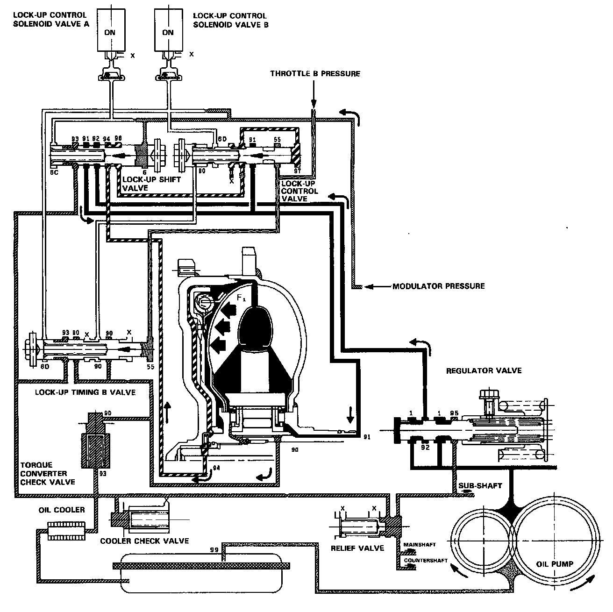

Full Lock-Up
FULL LOCK-UP
Lock-up Control Solenoid Valve A: ON Lock-up Control Solenoid Valve B: ON
When the vehicle speed further increases, the throttle B pressure is increased in accordance with the throttle opening. The lock-up timing B valve overcomes the spring force and moves to the left side. Also, this valve closes the oil port leading to the torque converter check valve.
Under this condition, the throttle B pressure working on the right end of the lock-up control valve becomes greater than that on the left end (modulator pressure in the left end has already been released by the solenoid valve B); i.e., the lock-up control valve is moved to the left. As this happens, the torque converter back pressure is released fully, causing the lock-up clutch to be engaged fully.
NOTE: When used, "left" or "right" indicates direction on the flowchart.